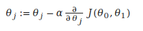
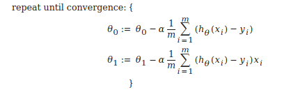

Usage Examples :
Large datasets from the growth of automation/web.
Autonomous helicopter, NLP, Computer Vision
Recommendations
Field of study that gives computers the ability to learn without being explicitly programmed.
A computer program is said to learn from experience E with respect to some task T and some performance measure P, if its performance on T, as measured by P, improves with experience E.
Example: Classifying emails as spam or not.
Example: playing checkers.
E = the experience of playing many games of checkers
T = the task of playing checkers.
P = the probability that the program will win the next game.
Common type of machine learning program.
In supervised learning, we are given a data set and already know what our correct output should look like, having the idea that there is a relationship between the input and the output.
Supervised learning problems are categorized into "regression" and "classification" problems. In a regression problem, we are trying to predict results within a continuous output, meaning that we are trying to map input variables to some continuous function. In a classification problem, we are instead trying to predict results in a discrete output. In other words, we are trying to map input variables into discrete categories.
Problems:
Right answers are given. Regression Problem: Predict continuous valued output(price)
Probality/ classification problem Discrete valued output(0 or 1) (0,1,2,3)
Here we can use 1 feature or attribute such as tumor size to classify.
Other attibutes we may use are - Clump Thickness - Uniformity of cell size - uniformity of cell shape - age
If we have a problem which have the infinite no of features from which we make predictions, an algorithm called Support Vector Machine allows us to deal with an infinite number of features.
Data does not have any labels. Can we find a find clusters in given data set.
Example: Google News
Clustering algorithms finds different categories the data falls under.
Cocktail party problem.
Seperate audios of different speakers
Examples:
Unsupervised learning allows us to approach problems with little or no idea what our results should look like. We can derive structure from data where we don't necessarily know the effect of the variables.
We can derive this structure by clustering the data based on relationships among the variables in the data.
With unsupervised learning there is no feedback based on the prediction results.
Example:
Clustering: Take a collection of 1,000,000 different genes, and find a way to automatically group these genes into groups that are somehow similar or related by different variables, such as lifespan, location, roles, and so on.
Non-clustering: The "Cocktail Party Algorithm", allows you to find structure in a chaotic environment. (i.e. identifying individual voices and music from a mesh of sounds at a cocktail party).
Training sets Notations

hθ(x) = θ0 + θ1x
θi's : Parameters
Choose θ0, θ1 so that hθ(x) is close to y for our training examples (x,y)
Goal : Minimize θ0, θ1 that is
J( θ0, θ1) = 1/2m * Σ mi=1 (hθ(x) - y)2
Minimize J( θ0, θ1) is called cost function or sometimes called squared error function or Mean squared error which is most commonly used for linear regression problems.


Final goal, we should try to minimize the cost function. In this case, θ1 =1 is our global minimum
Contour Plots
Contour plots (sometimes called Level Plots) are a way to show a three-dimensional surface on a two-dimensional plane. It graphs two predictor variables X Y on the y-axis and a response variable Z as contours. These contours are sometimes called z-slices or iso-response values.
A contour plot is appropriate if you want to see how some value Z changes as a function of two inputs, X and Y: z = f(x,y).
A contour plot is a graph that contains many contour lines. A contour line of a two variable function has a constant value at all points of the same line. An example of such a graph is the one to the right below.

Taking any color and going along the 'circle', one would expect to get the same value of the cost function. For example, the three green points found on the green line above have the same value for J( θ0, θ1) and as a result, they are found along the same line. The circled x displays the value of the cost function for the graph on the left when θ0 = 800 and θ1 = -0.15. Taking another h(x) and plotting its contour plot, one gets the following graphs:

When θ0 = 360 and θ1 = 0, the value of J( θ0, θ1) in the contour plot gets closer to the center thus reducing the cost function error. Now giving our hypothesis function a slightly positive slope results in a better fit of the data.

The graph above minimizes the cost function as much as possible and consequently, the result of θ1 and θ0 tend to be around 0.12 and 250 respectively. Plotting those values on our graph to the right seems to put our point in the center of the inner most 'circle'.
If we have our hypothesis function and we have a way of measuring how well it fits into the data. Now we need to estimate the parameters in the hypothesis function. That's where gradient descent comes in.
Imagine that we graph our hypothesis function based on its fields θ0 and θ1 (actually we are graphing the cost function as a function of the parameter estimates). We are not graphing x and y itself, but the parameter range of our hypothesis function and the cost resulting from selecting a particular set of parameters.
We put θ0 on the x axis and θ1 on the y axis, with the cost function on the vertical z axis. The points on our graph will be the result of the cost function using our hypothesis with those specific theta parameters. The graph below depicts such a setup.

We will know that we have succeeded when our cost function is at the very bottom of the pits in our graph, i.e. when its value is the minimum. The red arrows show the minimum points in the graph.
The way we do this is by taking the derivative (the tangential line to a function) of our cost function. The slope of the tangent is the derivative at that point and it will give us a direction to move towards. We make steps down the cost function in the direction with the steepest descent. The size of each step is determined by the parameter α, which is called the learning rate.
For example, the distance between each 'star' in the graph above represents a step determined by our parameter α. A smaller α would result in a smaller step and a larger α results in a larger step. The direction in which the step is taken is determined by the partial derivative of J(θ0,θ1). Depending on where one starts on the graph, one could end up at different points. The image above shows us two different starting points that end up in two different places.
The gradient descent algorithm is:
repeat until convergence:
where
j=0,1 represents the feature index number.
At each iteration j, one should simultaneously update the parameters θ1,θ2,...,θn. Updating a specific parameter prior to calculating another one on the j(th) iteration would yield to a wrong implementation

Our formula to implement a gradient descent for a single parameter was :

Regardless of the slope's sign for above equation, it eventually converges to its minimum value. The following graph shows that when the slope is negative, the value of θ1 increases and when it is positive, the value of θ1 decreases.

On a side note, we should adjust our parameter α to ensure that the gradient descent algorithm converges in a reasonable time. Failure to converge or too much time to obtain the minimum value imply that our step size is wrong.

How does gradient descent converge with a fixed step size α?
The intuition behind the convergence is that derivative J(θ1) approaches 0 as we approach the bottom of our convex function. At the minimum, the derivative will always be 0 and thus we get:
θ1 := θ1 − α ∗ 0

When specifically applied to the case of linear regression, a new form of the gradient descent equation can be derived. We can substitute our actual cost function and our actual hypothesis function and modify the equation to :
where m is the size of the training set, θ0 a constant that will be changing simultaneously with θ1 and xi , yiare values of the given training set (data).
Note that we have separated out the two cases for θj into separate equations for θ0 and θ1 and that for θ1 we are multiplying xi at the end due to the derivative. The following is a derivation of ∂/ ∂ θj J(θ) for a single example :

The point of all this is that if we start with a guess for our hypothesis and then repeatedly apply these gradient descent equations, our hypothesis will become more and more accurate.
So, this is simply gradient descent on the original cost function J. This method looks at every example in the entire training set on every step, and is called batch gradient descent. Note that, while gradient descent can be susceptible to local minima in general, the optimization problem we have posed here for linear regression has only one global, and no other local, optima; thus gradient descent always converges (assuming the learning rate α is not too large) to the global minimum. Indeed, J is a convex quadratic function. Here is an example of gradient descent as it is run to minimize a quadratic function.

The ellipses shown above are the contours of a quadratic function. Also shown is the trajectory taken by gradient descent, which was initialized at (48,30). The x’s in the figure (joined by straight lines) mark the successive values of θ that gradient descent went through as it converged to its minimum.